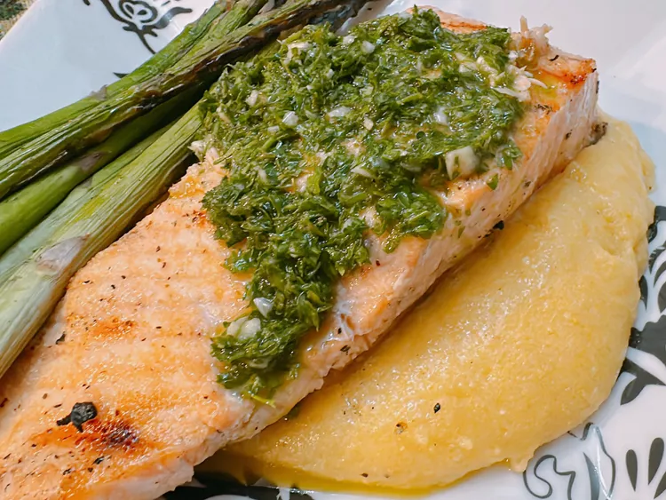

Salmon

Description
This grilled salmon with chimichurri pairs a rich, fatty grilled salmon
with tangy, bold, herbal chimichurri sauce, made in a blender.
Ingredients
- Chimichurri
- Salmon
- Chimichurri
- Slat and pepper
Steps
-
For chimichurri, add garlic and shallot to the bowl of a food processor
and pulse 2 or 3 times. Add herbs, lime juice, and vinegar. Blend until
finely chopped.
-
With the food processor still running, slowly drizzle in olive oil to
emulsify. Add lime zest, salt, and pepper to taste and blend until
smooth. Stir in red pepper flakes. Refrigerate until ready to use.
-
Prepare an outdoor grill for direct cooking over high heat, 450 to 550
degrees F (230 to 290 degrees C).
-
Generously coat the flesh side of the salmon fillets with oil and season
evenly with granulated garlic, Italian seasoning, salt, and pepper.
Grill the salmon, skin side down, over direct high heat for 6 to 8
minutes.
-
Turn the salmon over, close the lid, and cook until fish flakes easily
with a fork, 4 to 6 minutes longer. Transfer to a platter to rest for 1
to 2 minutes. Slide the salmon skin from the fillets and serve with
chimichurri.